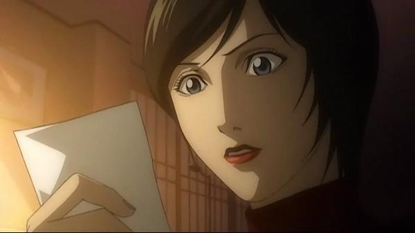

INICIO
CAPITULOS
DEATH NOTHE PERSONAJES
LIGHT YAGAMI
MISA AMANE
RYUK
REM
L. LAWLIET
NATHAN RIVER
MICHAEL KEEHL
KIYOMI TAKADA
TERU MIKAMI
Nayeli Ramírez Juárez todos los derechos reservados ©2015
|
KIYOMI TAKADA

Nació el 12 de julio de 1985, Kiyomi Takada fue la novia de
Light cuando estaba en la universidad antes de Misa, es considerada como la portavoz de Kira, es muy confiada y agradable,
aunque con Misa tiene una leve rivalidad por culpa de Light. Es una gran creyente del la política de Kira de un Nuevo Mundo
sin criminales. Al verla Light en un programa de televisión sobre Kira la llama y acuerdan reunirse para lograr que Light
consiga información sobre el X-Kira (Mikami) y también Light le dice que el es el verdadero Kira.
Takada es secuestrada por Mello y es llevada en un camión, donde este le pide que se quite la ropa pero ella se las ingenia
para matar a Mello con un trozo de la Death Note que tenía escondido; luego llama a Light y éste, quien lo había tenido todo
planificado, mata a Takada con otro trozo que tenía escondido en su reloj, aunque no contaba con que a Mikami también se le
ocurriría escribir el nombre de Takada en la libreta solo que un minuto después, lo que contribuyó en gran parte a que Near
pudiera descubrir y revelar a todos quien es el verdadero kira.
|